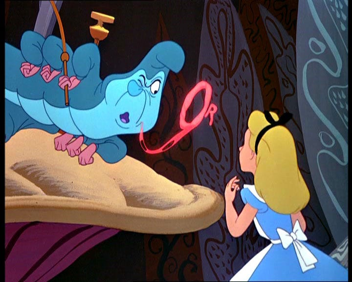
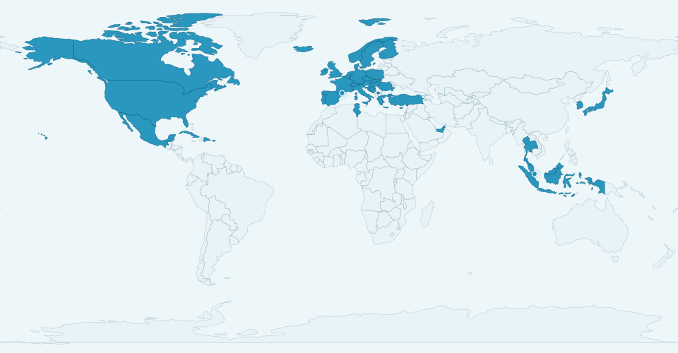
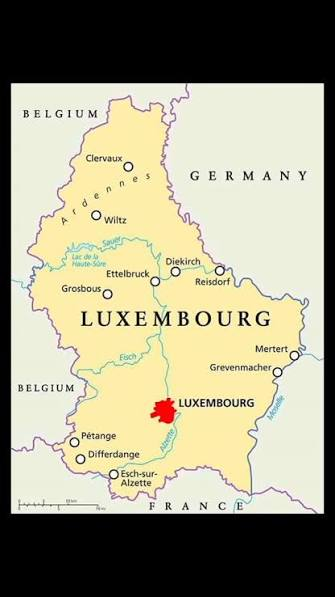
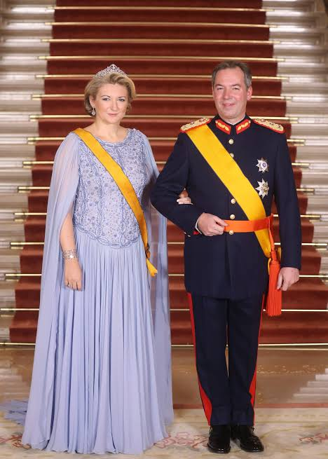
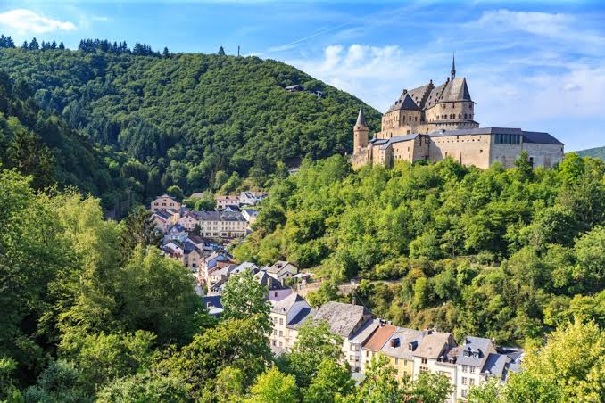

Welcome!
This is the digital rabbit hole I created for a few personal facts, favorite symbols, and pieces of my world beyond the formal website.
Butterflies and Wonderland

Butterflies are my favorite insects for their natural beauty and unique symbolism. In ancient Greek, the word psyche meant soul, life, spirit, and also butterfly. I find that connection with the invisible journey of the self, and of becoming, beautiful.
Coincidentally, that symbolism echoes my favorite childhood story, Alice in Wonderland, which is all about a fall into novelty, uncertainty, and discovery of the world, where true growth of the self begins. "Who are you?" asks the caterpillar to Alice.
I think this symbolism is splendid for both research and life: we are constantly changing, learning, questioning, and becoming.
Hobbies
I love travelling, painting, and tennis, where I am currently working on my skills.
Travels
I love travelling and keep a public map of the countries I have visited so far.

Colored countries are places I have visited so far.
Art
Work in progress. I will add a few paintings and artists I keep coming back to.
Tennis
Currently working on my skills!
Luxembourg



People are often curious about Luxembourg, so I made a short list of my favorite fun facts:
Geography
You can barely see Luxembourg when looking at the world map, but the country sits between France, Belgium, and Germany. Luxembourg's capital is... Luxembourg City! Funnily enough, Luxembourg is so small that you can visit all of its neighboring countries in less than an hour's drive. Our town in the south, Schengen (where the Schengen Agreement was signed!), sits right by the France-Germany-Luxembourg tripoint, so you can realistically hop between Luxembourg, France, and Germany in less than 60 seconds. Going to Belgium, your fourth country for the day, takes about a one-hour drive. :)
People
Luxembourg has an estimated population of about 700,000 people. A person with Luxembourgish citizenship is a Luxembourger (you can also say that you are Luxembourgish). But Luxembourgers only make up about half of the population, and even less than half in the capital, where around 70% of residents are foreign nationals.
Languages
The official languages are Luxembourgish (yes, it is a real language, not a dialect!), French, and German. "Moien!" is your go-to for "Hello!" in Luxembourgish.
Industries
Big in finance, steel (ArcelorMittal), and space exploration. Luxembourg was the first country in Europe, and the second in the world after the United States, to create a legal framework giving private companies rights over resources they extract from space, such as asteroids, the Moon, or other celestial bodies.
Famous internationally
- Tax haven: Many people think that Luxembourg is a tax haven. Debunking the myth here: while corporate taxes can be low, it is technically not a tax haven under OECD criteria.
- Free public transport: Yes, we love it!
- The only Grand Duchy in the entire world: The Grand Duke is Guillaume (Guillaume V). Politically speaking, he has limited influence and mostly has a representative/symbolic role.
- National Day: Every year, Luxembourg celebrates the Grand Duchy on 22-23 June, and honestly it is the biggest party of the year (bigger than NYE!). The country turns into a huge open-air celebration with fireworks, street parties, and the City Sounds festival. Recent artists have included OneRepublic, Lost Frequencies, Train, Toto, and Robin Schulz.
There are so many other things to know about Luxembourg, from culture and cuisine to random everyday-life facts that make it unique. For a very national little dose of humor, check out @luxembourgish_memes on Instagram, one of our favorite social accounts.